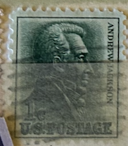
| SOURCE | TITLE| IMAGE MATCH | click to source page |
| eBay | Vintage 1963, Andrew Jackson, 1 Cent Stamp, Green | eBay | 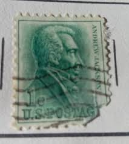 |
| Etsy | RARE Vintage Washington 1 Cent Stamp US Postage FINE Condition, 50% off With Promo Code!! - Etsy | 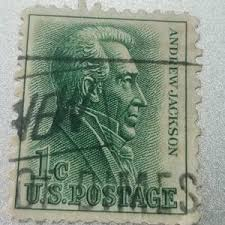 |
| eBay | Andrew Jackson 1 Cent Stamp In Unused Us Stamps (1941-Now) for sale | eBay | 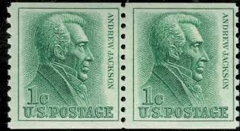 |
| Mystic Stamp Company | 1225 - 1963 1c Andrew Jackson, Rotary Coil, Vertical Perf 10 - Mystic Stamp Company | 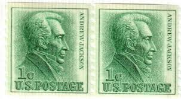 |
| eBay | Sc # 1209 ~ 1 cent Andrew Jackson Issue, Precancel, ORANGE MASS. #1 | eBay | 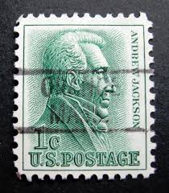 |
| Mercari | Rare Andrew Jackson 1 cent stamp Sal Lake | Mercari | 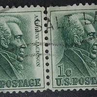 |
| eBay | 1938 1-Cent Andrew Jackson U.S. Postage Stamp - Green - Vintage Prexie Series | eBay | 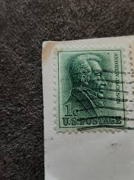 |
| eBay | Vintage 1963, Andrew Jackson, 1 Cent Stamp, Green / 1962 Blue George Washington | eBay | 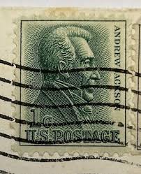 |
| eBay | US STAMP POSTAGE : (1) Scott #1209 1 CENT ANDREW JACKSON NH Used | eBay | 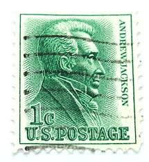 |
| eBay | STAMP US SCOTT 1225 "Andrew Jackson" 1 CENT 1963 USED FANCY CANCEL | eBay | 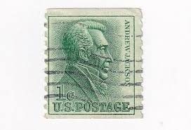 |
| eBay | Sc # 1209 ~ 1 cent Andrew Jackson Issue, Precancel, TACOMA WA (be6) | eBay | 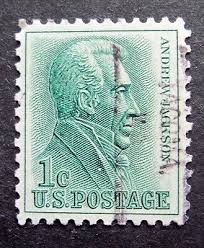 |
| eBay | STAMP US SCOTT 1209 "Andrew Jackson" 1 CENT 1963 USED FANCY CANCEL | eBay | 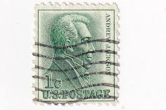 |
| eBay | Sc # 1209 ~ 1 cent Andrew Jackson Issue, Precancel, ORANGE MASS. #2 | eBay | 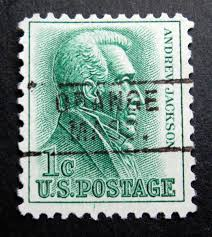 |
| eBay | Sc # 1209 ~ 1 cent Andrew Jackson Issue, Precancel, WELLINGTON OHIO | eBay | 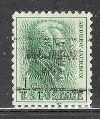 |
| eBay | OFFER - Lot of 10 US Postage Stamps - Unused | eBay | 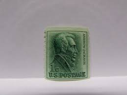 |
| eBay | Sc # 1209 ~ 1 cent Andrew Jackson Issue, Precancel WESTON PA | eBay | 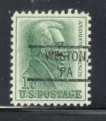 |
| Lingua Stricte | Vintage postal stamps US president | 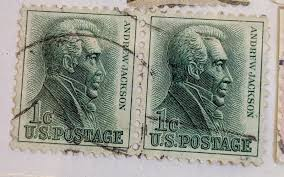 |
| eBay | Scott 1225, the 1963 1¢ Jackson Coil Single - Mint, Never Hinged - Untagged | eBay | 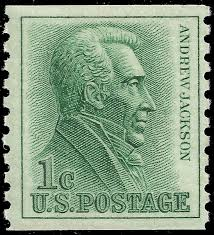 |
| eBay | Sc # 1209 ~ 1 cent Andrew Jackson Issue, Precancel, SAN PEDRO CALIF. | eBay | 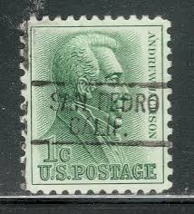 |
| eBay | Sc # 1209 ~ 1 cent Andrew Jackson Issue, Precancel, ZANESFIELD OHIO | eBay | 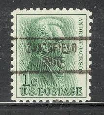 |
| eBay | Midland, Texas Type 819 Precancel - 1 cent Jackson - U.S. #1209 - TX | eBay | 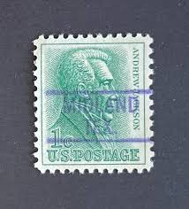 |
| eBay | Sc # 1209 ~ 1 cent Andrew Jackson Issue, Precancel, NEWARK, OH | eBay | 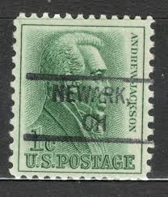 |
| eBay | Morton, Pennsylvania Type 729 Precancel - 1 cent Jackson - U.S. #1209 - PA | eBay | 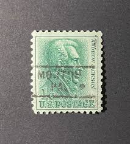 |
| eBay | Greensboro, Vermont Type 841 Precancel - 1 cent Jackson - U.S. #1209 used - VT | eBay | 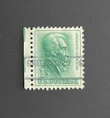 |
| eBay | 11 stamps of Five (5) US Presidents Postal Stamps and 2 Ben Franklin Stamps | eBay | 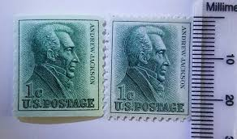 |
| eBay | US 1c Jackson Stamp #1225 Perf Error - Antique | eBay | 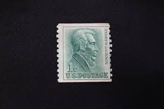 |
| eBay | Sc # 1209 ~ 1 cent Andrew Jackson Issue, Precancel, CARTHAGE TEX. (be6) | eBay | 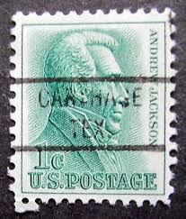 |
| eBay | US 1963 1c Andrew Jackson Stamp 1 Cent US Postage Unused Uncirculated Green | eBay | 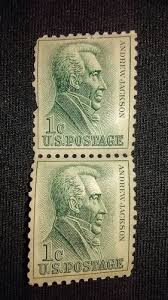 |
| samarpanacademy.co.in | Vintage 1¢ Andrew Jackson Stamps – Set of 9 | 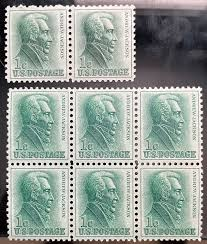 |
| eBay | US 1963 1c Andrew Jackson Stamp 1 Cent US Postage Unused Uncirculated Green | eBay | 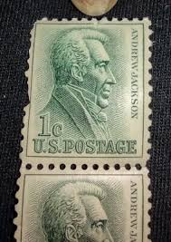 |
| eBay | Sc # 1209 ~ 1 cent Andrew Jackson Issue, Precancel, DEVINE TX (be6) | eBay | 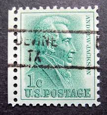 |
| eBay | Vintage 1964 Postcard City Squire Motor Inn Broadway New York City Hotel | eBay | 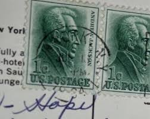 |
| eBay | USA - 1963 - Andrew Jackson - 1¢ x2 - #2663 | eBay | 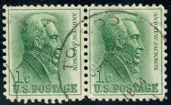 |
| eBay | Andrew Jackson 1 cent U.S. Postage stamps, penny, set of two | eBay | 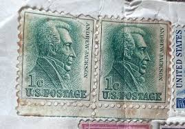 |
| eBay | US Scott # 1209 Block of 4, Andrew Jackson, (4) 1963 1¢ Stamps MNH | eBay | 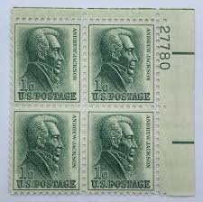 |
| eBay | STAMP US SCOTT 1209 "Andrew Jackson" 1 CENT 1963 USED FANCY CANCEL BLOCK OF 6 | eBay | 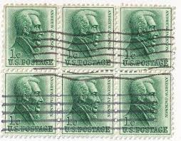 |
| eBay | Sc # 1209 ~ 1 cent Andrew Jackson Issue, Precancel, TOLEDO, OHIO | eBay | 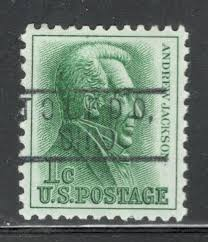 |
| ebid.net | US Stamp #1033 used: 1954 2c Thomas Jefferson pair [1] on eBid United States | 140490184 | 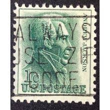 |
| OfferUp | Vintage 1992 Hurricane Andrew FPL Restoration Team Snapback Hat. Adult. Good Condition, See All Pics for Sale in Tamarac, FL - OfferUp | 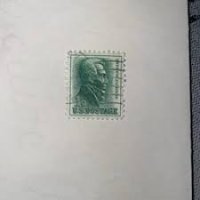 |
| eBay | Andrew Jackson 1 Cent Stamp 1963 Used | eBay | 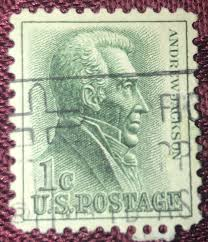 |
| eBay | US 1963 1c Andrew Jackson Stamp Scott# ? Used Pair - #B217 | eBay | 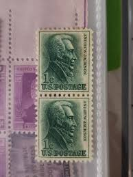 |
| eBay | 1209 1c ANDREW JACKSON - HOC cachet | eBay | 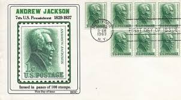 |
| eBay | STAMP US SCOTT 1209 "Andrew Jackson" 1 CENT 1963 MNH PB OF 4 LR - A | eBay | 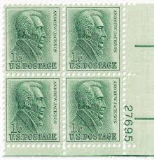 |
| eBay | US Postage Stamps Frank Lloyd Wright, Washington, Andrew Jackson, Paul Revere | eBay | 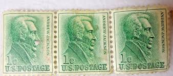 |
| eBay | US Scott # 1209, Andrew Jackson, Plate Block of (6) 1963 1¢ Stamps, MNH | eBay | 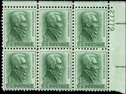 |
| eBay | Millheim, Pennsylvania Type 841 Precancel - 1 cent Jackson - U.S. #1209 - PA | eBay | 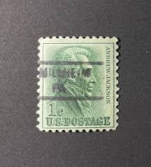 |
| eBay | U.S. Postage Stamp ~ Andrew Jackson ~ 1¢ Green Stamp ~ Used/Posted ~ 1963 - D03 | eBay | 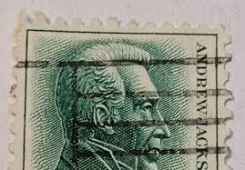 |
| eBay | 3) U.S. United States Green 1963 1c One Cent Andrew Jackson Postage Stamp(s) | eBay | 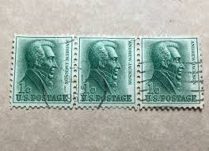 |
| eBay | Sc # 1209 ~ 1 cent Andrew Jackson Issue, Precancel, TEXAS (be6) | eBay | 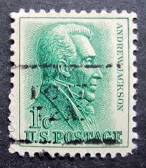 |
| eBay | 1963 1c Andrew Jackson Scott 1209 Mint F/VF NH | eBay | |
| eBay | US Scott # 1225, 1963 Andrew Jackson, (3) 1 Cent Stamps, MNH | eBay | |
| eBay | Sc # 1209 ~ 1 cent Andrew Jackson Issue, Precancel #1 | eBay | |
| eBay | Victoria, Kansas Type 819 Precancel - 1 cent Jackson - U.S. #1209 - KS | eBay | |
| eBay | Sc # 1209 ~ 1 cent Andrew Jackson Issue, Precancel, MEDFORD OR | eBay | |
| eBay | 1961- U.S. PROM. AMERICANS 1c JACKSON COIL LINE PAIR CLP Sc#1225 M/NH/OG* | eBay | |
| Magnolia Postage | 10 x 1-cent Andrew Jackson stamps — Magnolia Postage | |
| eBay | US Stamp Sc 1209, 1c Andrew Jackson, Plate Block of 4, MNH VF CV$1.00(GE09) | eBay | |
| eBay | Sc # 1209 ~ 1 cent Andrew Jackson Issue, Precancel, PINE VALLEY, CALIF. | eBay | |
| eBay | EXCELLENT GENUINE SCOTT #1209 POSTALLY USED JACKSON PSE CERT GRADED VF-XF 85 | eBay |